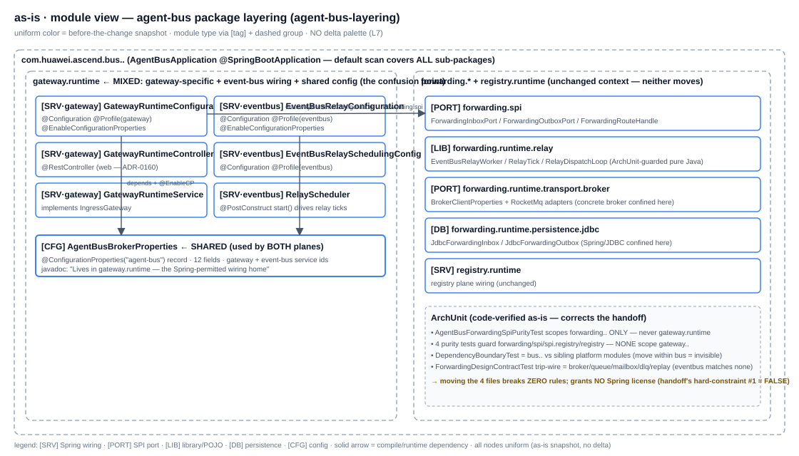
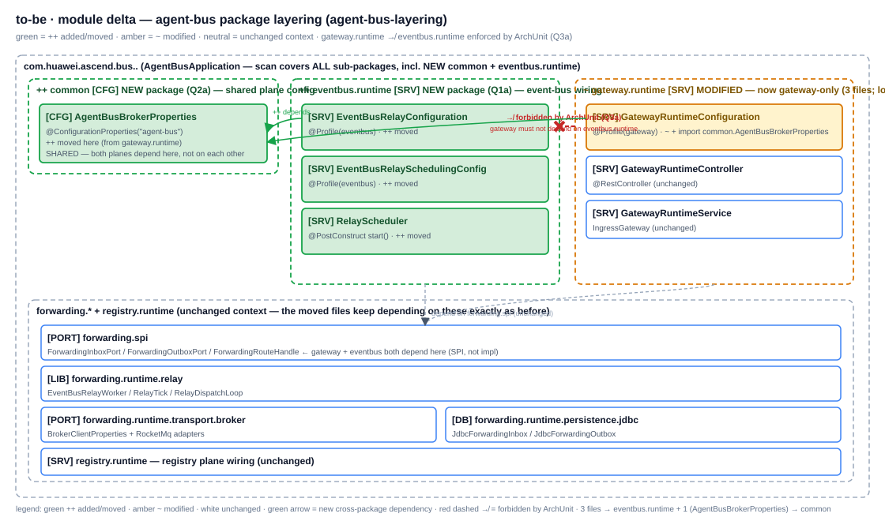
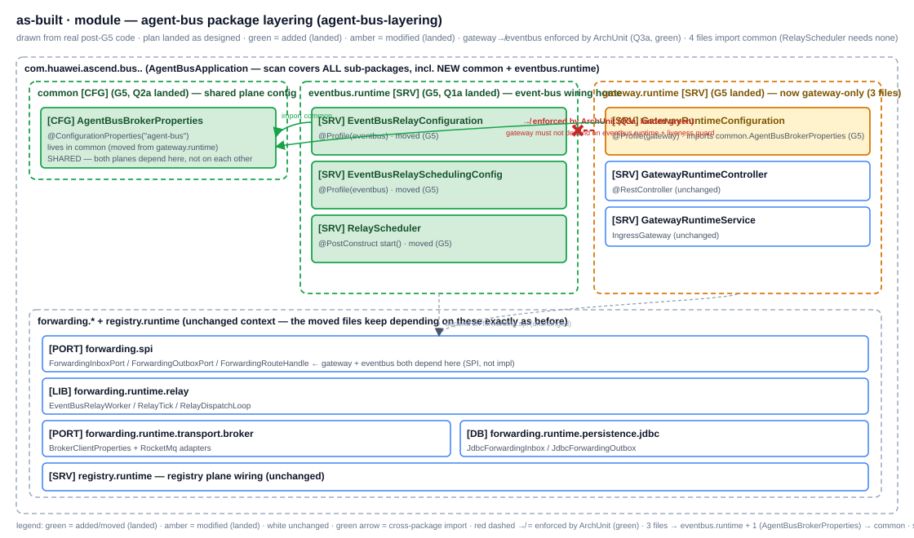

G2 · as-is
gateway.runtime is a MIXED package: 3 gateway-specific files + 4 event-bus wiring files + the shared AgentBusBrokerProperties. CRITICAL finding (corrects the handoff): no ArchUnit rule scopes gateway../eventbus.. — moving breaks zero rules, needs no "Spring license grant" (handoff's hard-constraint #1 is FALSE).module

G4 · to-be (delta)
AgentBusBrokerProperties — shared by both planes, Q2a; the one deviation from the DoD's literal "4 files → eventbus.runtime") + ~ gateway.runtime (now gateway-only; +1 import). ++ ONE ArchUnit rule: gateway.runtime ↛ eventbus.runtime (Q3a). No behaviour/profile/bean-name change.module delta

G6 · as-built
module as-built

Actual file changes (G5 implemented — signed off 2026-07-16)
| Δ | Path | What (actual) |
|---|---|---|
| ++ | agent-bus/.../eventbus/runtime/EventBusRelayConfiguration.java | moved (git mv) from gateway.runtime; package decl + +import common.AgentBusBrokerProperties (no javadoc home-ref existed — no-op, dev. #5) |
| ++ | agent-bus/.../eventbus/runtime/EventBusRelaySchedulingConfig.java | moved; package decl + +import common.AgentBusBrokerProperties |
| ++ | agent-bus/.../eventbus/runtime/RelayScheduler.java | moved; package decl only (no BrokerProperties ref → no import) |
| ++ | agent-bus/.../common/AgentBusBrokerProperties.java | moved; package decl + "Lives in common, shared by both planes" javadoc (Q2a) |
| ~ | agent-bus/.../gateway/runtime/GatewayRuntimeConfiguration.java | +import common.AgentBusBrokerProperties |
| ++ | agent-bus/src/test/.../eventbus/runtime/EventBusRelaySchedulerTest.java | moved to mirror RelayScheduler; package decl + +import common.AgentBusBrokerProperties (dev. #2: not co-located with BrokerProperties) |
| ++ | agent-bus/src/test/.../architecture/AgentBusDependencyBoundaryTest.java | +1 rule gateway↛eventbus (check BUS_PRODUCTION) +1 liveness guard (dev. #3: boundary test, not purity test — would be vacuous there) |
Import ripple: 4 files (not 1) import common.AgentBusBrokerProperties — the 3 moved files that reference it + the gateway staying file. RelayScheduler needs none. Mechanical consequence of Q2 (BrokerProperties→common, not eventbus.runtime); see deviations.md.
G3 decision tree — as-built landed
| Q | Chosen branch (agent 拍板, signed off 2026-07-16) | Why (one line) | as-built landed |
|---|---|---|---|
| Q1 target package | (a) eventbus.runtime, flat | user DoD names it; clean plane boundary mirroring gateway/registry.runtime; 3 files too few for sub-packages | ✓ landed — 3 files at com.huawei.ascend.bus.eventbus.runtime, flat |
| Q2 AgentBusBrokerProperties ownership | (a) common (not eventbus.runtime) | shared by both planes; putting it in eventbus.runtime inverts the dep (gateway→eventbus.impl); neutral common matches handoff's anticipated taxonomy | ✓ landed — at com.huawei.ascend.bus.common; 4 files import it (dev. #1) |
| Q3 add ArchUnit boundary rule? | (a) add ONE rule: gateway.runtime ↛ eventbus.runtime | the boundary is the deliverable; an unenforced boundary rots back (as gateway.runtime-as-wiring-home did) | ✓ landed — in AgentBusDependencyBoundaryTest, green + liveness guard (dev. #3) |
| Q4 ADR | (a) new ADR (NOT amend ADR-0161) | ADR-0161 = 3 G5-E substrate deviations, NOT gateway.runtime-as-wiring-home; that convention is implicit javadoc/plan prose | ✓ landed — ADR-0162 written; 0161 untouched |
| Q5 doc edits | (a) leave closed plan + L2 line | plan doc is a closed historical record; L2 line 457 still accurate for the staying gateway files | ✓ landed — both left untouched |
| G3.5 UI prototype | skipped | pure backend / package-move refactor — no frontend template delta | n/a |
G6 diff vs to-be
| Matched ✓ | Drifted ⚠ | Missing ✗ | Surprise ⚠⚠ |
|---|---|---|---|
| 7 — common pkg, eventbus.runtime pkg (3 files), gateway.runtime slimmed, ArchUnit rule, dep direction, unchanged context, component scan | 2 — (1) import ripple 4 files not 1 (Q2 consequence); (2) rule home = boundary test not purity test (Q3-anticipated). Both accepted as-is. | 0 | 0 |
Status: CLOSED (2026-07-16). G2 as-is + G3 decision tree + G4 to-be signed off (5 branches) + G5 implemented + G6 as-built (all Matched ✓ + 2 Drifted ⚠ accepted, 0 Missing, 0 Surprise) + G7 closed (ADR-0162). Suite ./mvnw -f agent-bus/pom.xml test → 443 green / 14 skip / 0 fail (+2 vs 441 baseline = the Q3 rule + liveness guard). Corrected-handoff facts recorded at sign-off: hard-constraint #1 (grant Spring permission to eventbus.runtime) was code-verified FALSE; "reverse ADR-0161" was mis-attributed (0161 = 3 G5-E substrate deviations, unrelated). The two Drifted ⚠ are mechanical (Q2's import ripple) + a clarification (rule home, Q3-anticipated) — neither a decision change.